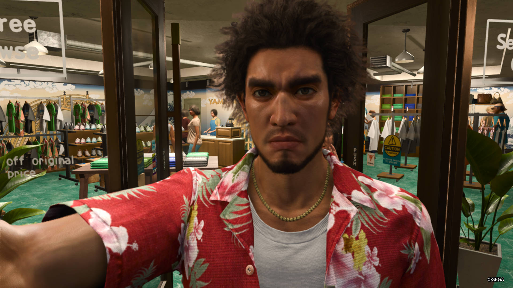
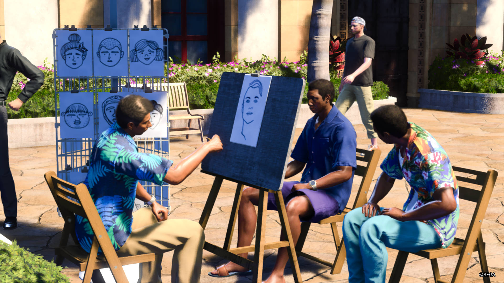
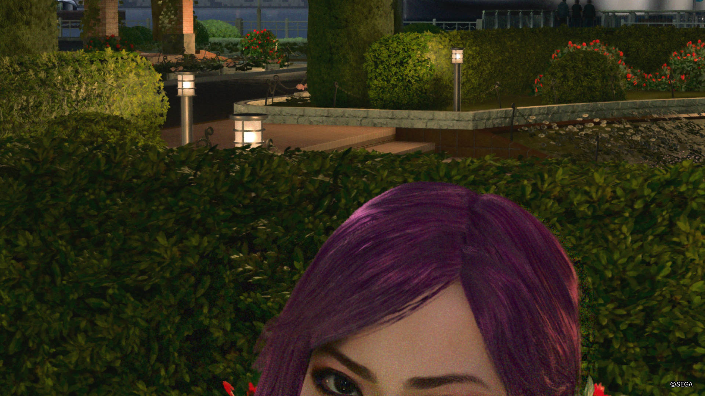
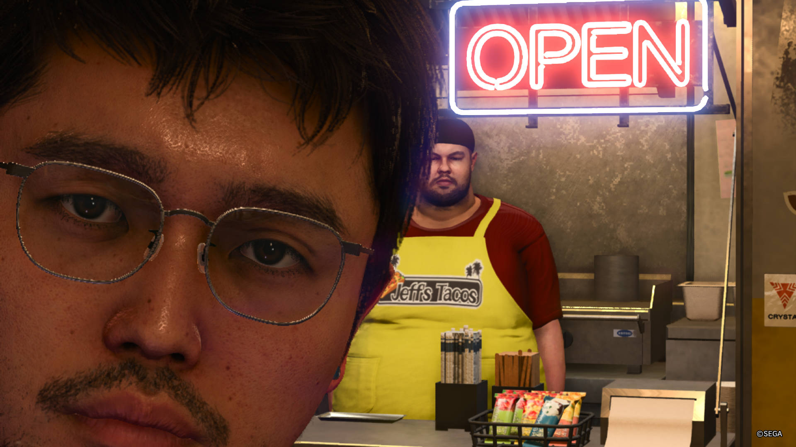

My Adventures Taking in game photos in Like A Dragon: Infinite Wealth
Ive taken ever so many pics
This is Ichiban Kasuaga
He is the main character of the game and this is his 2nd game where he goes to hawaii, he has so much fun on his trip with his friends
I found this man working outside a cafe and used the camera to zoom in on his laptop to see what fun work he was doin
I then felt self conscious so i tried to hide that i was taking pics of him by taking an stealthy selfie
I thought i got away with this until i turned around
So i ran away.... And then came back with a friend
Then came back again later that night with some more friends
And did an #throwback selfie
I don't know what this npc’s name is but its a vibe
This guy started flexing when i pulled the camera out and i think thats fun
Then i found out thers an fisheye filter and went a bit nuts, for some reason i found out about this filter while i was standing in a bathroom and i can only imagine how confused this man must be
I was stalking this guy for a while trying to take the perfect shot
Ended up taking it through the arm of a person who was stopped at the traffic lights
Looked up and arm man didnt seem that happy with me
Saw this cool dog
This person was trapped inside of this building alone and that made me sad, i took a lot of photos to convey how sad i was
Had to stop to admire this street artists talents
Found out taking a selfie infront of a car makes them stop
They dont honk at you and this is the most unrealistic thing i could imagine
Then i spent a full weekend going mad on the animal crossing mini game
People wre more likely to come to my island because i had an cellblock tower and this old building
The game also let me put multiple cars inside of his house so you bet i did that
Overall this mini game distraction was quite fun and pretty but i eventually had to retrun to the main game
Which is of course annoying NPCS

For story missions they had the characters wear suits and a) shes like 22 hanging out with a 40 year old dude dressed like that and b) ichiban looks like his had a fuckin rough one
This guy is based off an employee at the game studio and the little peac thing is such a mood
Now For story reasons you're playing as Kiryu who is a much older guy so i started taking boomer photos
These guys were a fight that i had to start because they were harrasing this lady but i had to stop to take some selfies
Back in the bathroom
Found the Snapshcat Filters
Back to Hawaii to see a cool food truck
And then immediately get photo bommed
So this is Reolve bar, which is like your hub in the game
Theres the bartender
And the lady who gets you onto the facebook thing the game has basically
Upstairs theres a bird that once decided to nest in Kasuaga's hair
This is a hermit shell thats his pet and its fun
Mirrors in the bathroom dont work like youd expect in this dimension
In the beach theres just this dude whos burried in the sand like this forever, thats fun
Theres this cool lifeguard as well who trains you to be a lifeguard sorta
Another instance of me being a creep with taking pics of a couple who are frozen and unable to stop me
This surfboarder tried to stop me
But the guy was powerless to stop me from getting in and taking wierd pics
Then i went down into the dungeones to grind and saw more of that wonderful street art
And some stuff that i cannot explain other than "its a yakuza game"
the end.